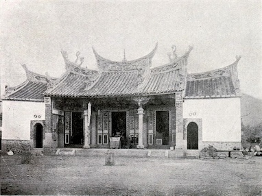
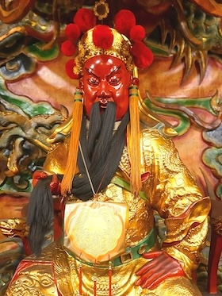

西元 1875 年（清光緒元年），飛虎軍提督吳光亮率兵開拓八通關古道，進駐璞石閣（今玉里）。途中瘟疫肆虐，吳光亮焚香向隨身奉祀之關聖帝君祈求庇佑，疫病旋即平息。為感謝神恩，遂建小祠奉祀，此即本宮之創始。
玉里協天宮是花蓮縣境內最早建立的廟宇，亦為「花東三大廟宇」之一，香火鼎盛逾百五十年。吳光亮親題之「後山保障」匾額高懸廟中，為花蓮縣境內極少數保存完好的晚清珍貴文物，具有不可取代的歷史價值。現今廟貌係 1951 年地震後重建，傳統閩式建築，門樓石獅威猛莊嚴。

三界伏魔大帝 神威遠鎮天尊
忠義神武靈佑仁勇威顯關聖大帝
關聖帝君，諱羽，字雲長，河東解良人，三國蜀漢名將。忠肝義膽，千秋萬世受人敬仰。歿後歷代追封，位列神界，統轄三界，伏魔護法，文武德兼備，為臺灣民間最廣受崇敬之神明之一。
本宮陪祀諸神：觀世音菩薩、天上聖母、城隍爺、神農大帝、福德正神、月下老人，照護信眾生活各面向，使玉里鄉親不論祈求姻緣、農作豐收、地方平安皆有所依。